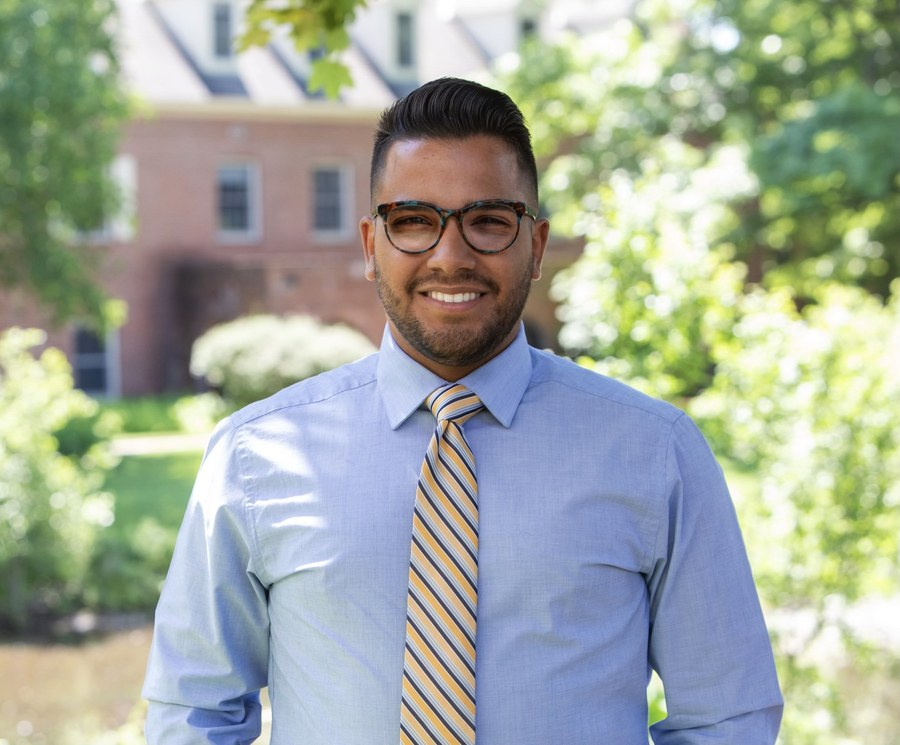
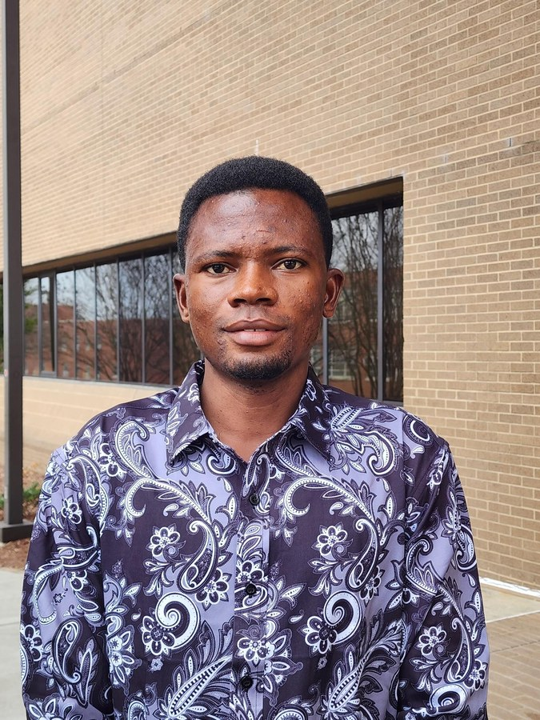
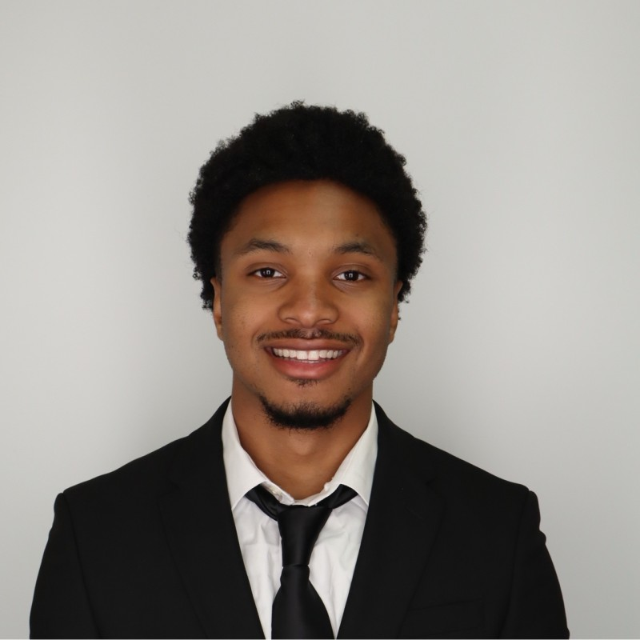
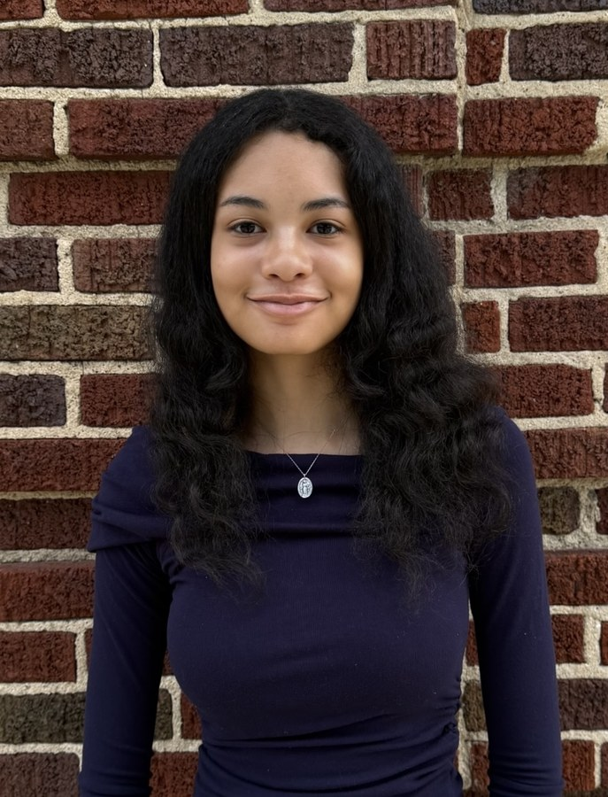
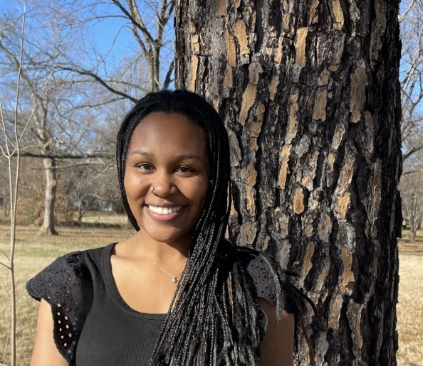
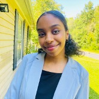

Master's and PhD Students
Akilah Jones is a researcher with an interest in civil systems and the role of emerging technologies in shaping more accessible communities. She is currently working on a project exploring the use of autonomous vehicles in rural areas experiencing transportation insecurity. Her work focuses on the intersection of mobility innovation, fairness in access, and rural infrastructure. Akilah is a graduate of The Ohio State University, where she earned her degree in Architecture, and she is currently a Woodland E. Hall Fellow at North Carolina A&T State University. In 2026, she was part of the team that won first place in the CR2C2 Southeast Data Competition, and in October 2026 she successfully defended her M.S. thesis, "Interagency Coordination: An Integrated Evaluation of Interagency Coordination and Transit Accessibility in Rural Areas."
Ali Gorji started with the transportation modeling lab in 2025. His research focuses on applying machine learning techniques to transportation engineering problems, including traffic analysis, crash prediction, and time series analysis. Ali has developed innovative methodologies for AADT prediction and crash report analysis, leveraging advanced machine learning tools such as PyTorch, TensorFlow, and Optuna. Outside of his academic work, he enjoys exploring books on history and psychology.
Bryan Rodriguez is a civil and transportation engineer with professional experience in roadway and transportation design. His research interests include transportation systems, roadway design, traffic operations, data analysis, and the application of computational methods to transportation engineering. He is currently completing his M.S. project under the supervision of Dr. Venktesh Pandey, with a focus on transportation-related research. Bryan is also interested in pursuing doctoral studies and continuing his development in academia, research, and student mentorship.

Isaac Agyemang is a graduate research assistant who joined the Transportation Modeling Lab at North Carolina A&T in the Spring of 2026. His research interests include transportation planning and safety, optimizing traffic flow to reduce congestion, traffic operations and modeling, intelligent transportation systems. Outside academics, he enjoys playing and watching football and is a passionate supporter of Real Madrid.

Komal Gulati is currently pursuing her PhD degree in Electrical Engineering under the department of Electrical and Computer Engineering at North Carolina A&T State University. She completed her MSc in Automotive Engineering from the University of Leeds, United Kingdom in 2020 and worked as a research intern at the Automotive Research Association of India on autonomous vehicle development. As a Graduate Research Assistant at the Center for Regional and Rural Connected Communities (CR2C2), Komal's research focuses on transportation planning challenges in underserved communities using geospatial analysis and artificial intelligence. Her recent work includes healthcare accessibility analysis, truck parking optimization using reinforcement learning, rural freight transportation planning, and Hurricane Helene disaster resilience modeling. Komal served as Chair of the CR2C2 Student Leadership Council (2025-2026) and is a student member of the WTS NC Triangle Chapter. She is an Eno Center for Transportation Leaders Development Conference Fellow (2025) and received the Emily Blount Honorary Scholarship at the 2025 NCSITE Annual Meeting. In November 2024, she led her team to first place in the CR2C2 Data-Driven Transportation System Design Challenge. In 2026, she received the Bridgette Beato Leadership Legacy Award from WTS, was part of the first-place team in the CR2C2 Southeast Data Competition, and earned the graduate certificate in Autonomy from the Department of Electrical and Computer Engineering. Her research has been published in Transportation Research Record and presented at TRB Annual Meetings, the NCDOT Research and Innovation Summit, and the ASCE International Conference on Transportation and Development.
Meray Abdelmalak is a graduate student in civil engineering at North Carolina A&T State University, continuing through the Accelerated Bachelor's to Master's (ABM) Degree Pathway. Her interests lie in transportation planning, with a focus on accessibility, mobility, and ensuring fair access to transportation. She interned with Davenport, Inc. in Summer 2025 and with HNTB in Summer 2026. In 2026, she received a Leadership Legacy Award from WTS, was part of the first-place team in the CR2C2 Southeast Data Competition, and, with David Quansah, won the Ford College Network Test Track Award for Social Mobility for the "Rockingham Connect" rural transit app prototype. Meray is the Chair of the CR2C2 Student Leadership Council (2026-2027). In her free time, she enjoys reading and watching TV shows.
Current and recent
Jeremy Hinton is a junior studying civil engineering at North Carolina A&T State University. He joined the Transportation Modeling Lab in Fall 2026. In Summer 2026, Jeremy interned with the North Carolina Department of Transportation (NCDOT), and he is now helping with the lab's NCDOT project for the strategic prioritization cycle, which models how combinations of transportation projects interact across the network.

Haven McKinney is an undergraduate Architectural Engineering student at North Carolina A&T State University. Her interests lie in many areas of design, accessibility, and the connections between buildings and the neighborhood systems around them. She is deeply motivated to broaden her knowledge of engineering and to be an innovative student. Haven joined the Transportation Modeling Lab in the Summer of 2026. During her free time, she enjoys crocheting, watching movies, and doing multimedia projects.

Kayla Stevens is an undergraduate student currently studying civil engineering at North Carolina A&T University. She is exceptionally curious about the transportation engineering industry and joined the Transportation Modelling Lab in the spring of 2025. Kayla is particularly interested in how incentivization can improve the urban travel experience, along with the improvement of roadway design and the continuous development of smartroads. During her free time she enjoys sewing, playing with her dogs and learning about places she wants to visit.

Muzan Abdelrahman is currently enrolled in North Carolina A&T as an undergraduate civil engineering student. She has a strong interest in anything related to Transportation engineering particularly in how well-designed systems can make travel more efficient and accessible for everyone. Muzan joined the Transportation Modelling Lab in the Summer of 2025 and is focused on research for state of the art on auxiliary lanes between freeway interchanges. In her free time, she enjoys reading mystery thriller books and baking.

Neil Deshpande is an undergraduate civil engineering student at North Carolina A&T State University. He joined the transportation modeling lab in Spring 2025 and has a strong interest in researching and improving access to the various modes of multimodal transportation. During the summer of 2025, Neil was an NCDOT HBCU Intern and worked in the Asheville, NC District Engineer's office. Neil has been part of a CR2C2 project titled "Community-Oriented and Data-Driven Mobility Modeling For Rural and Disconnected Communities", and has focused his research on the intercity bus system. In his spare time, Neil enjoys hiking, cycling, browsing Google Maps, reading, video games, and chess.
Current positions were last reviewed in Aug 2025; 2026 graduates were added in Oct 2026.